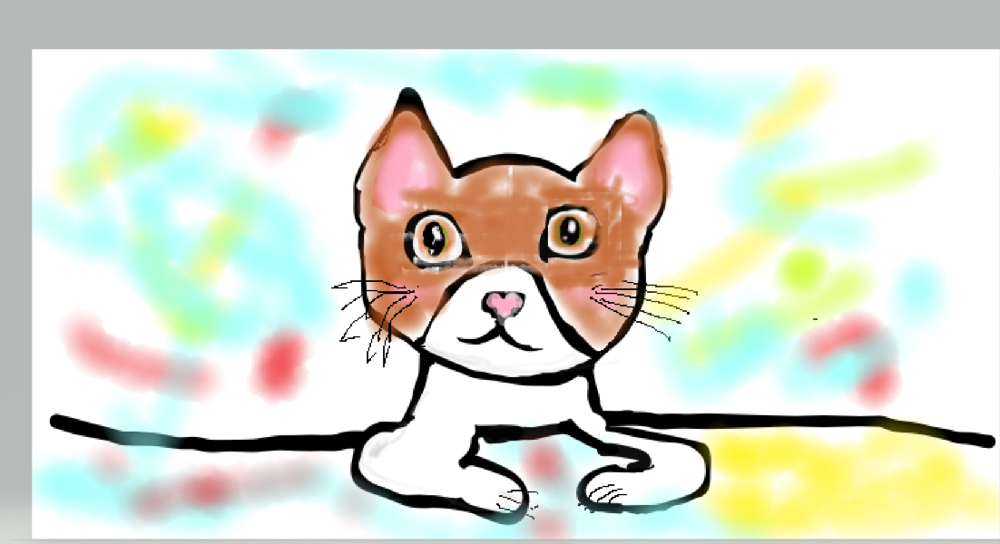

мяу
На главную

У меня есть кошка.Ее зовут Бони.Ей 8 месяцев.Она игривая и ласковая, очень любит людей. Появилась она у нас так:Когда то мы хотели взять питомца и мы захотели взять кошку. А смотрели мы на авито в добрые руки бесплатно. Мы долго выбирали и я захотела Боню . Мы разговаривали с хозяйкой кошки и мы решил что возьмем ее на недельку или две проверить прижеветься или нет?К счастью она прижелась но немножечко боялась. Теперь она живет у нас радостной жизнью и хозяйвами . А выглядит она вот так.